第一学期 · 像素背景画廊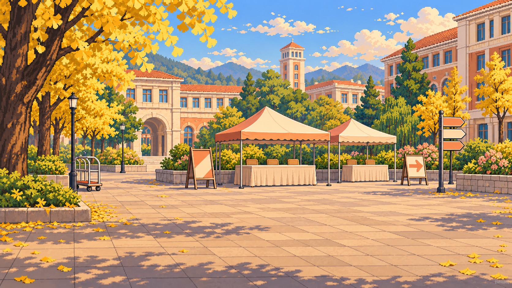
01 · 入学报到
下载原图 PNG ↓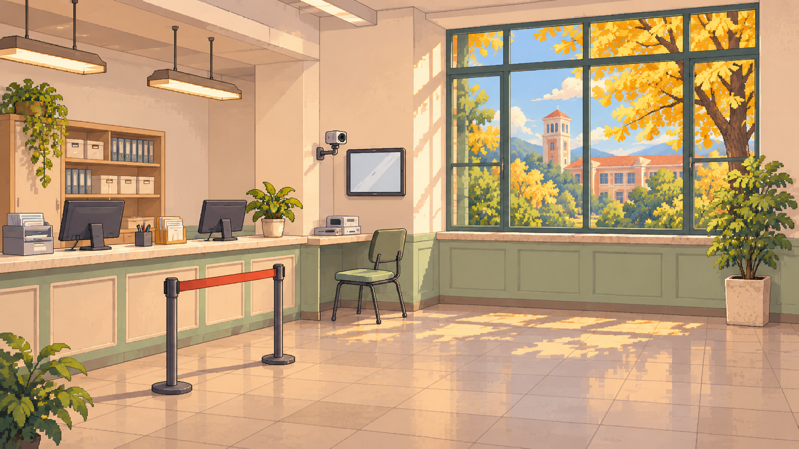
02 · 人脸录入
下载原图 PNG ↓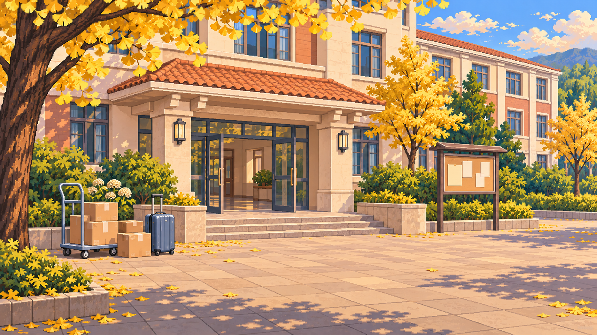
03 · 宿舍楼前与行李
下载原图 PNG ↓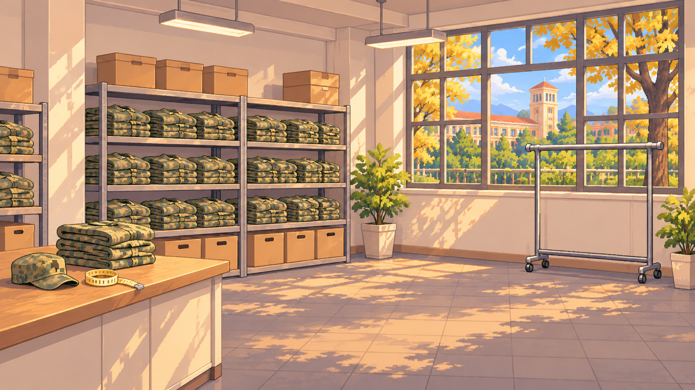
04 · 购买军训服
下载原图 PNG ↓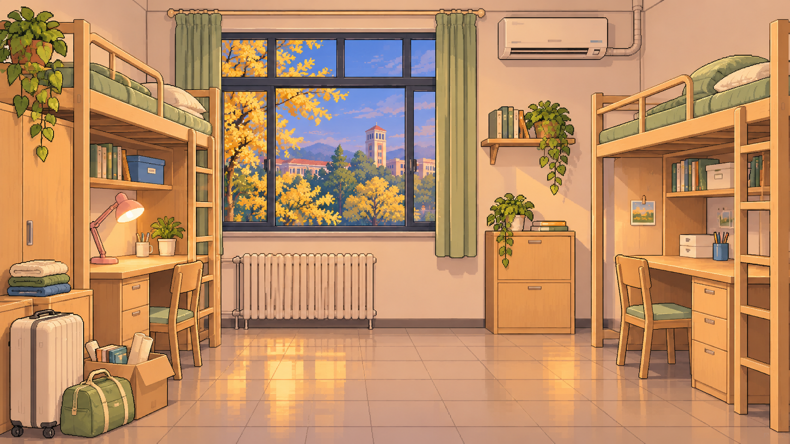
05 · 宿舍第一晚
下载原图 PNG ↓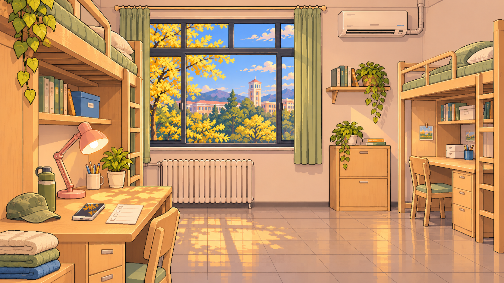
06 · 军训前读通知
下载原图 PNG ↓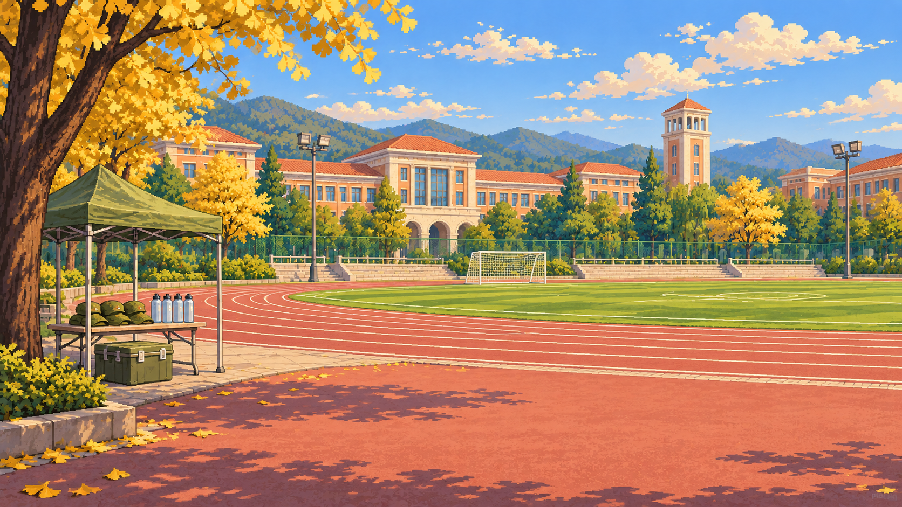
07 · 军训操场
下载原图 PNG ↓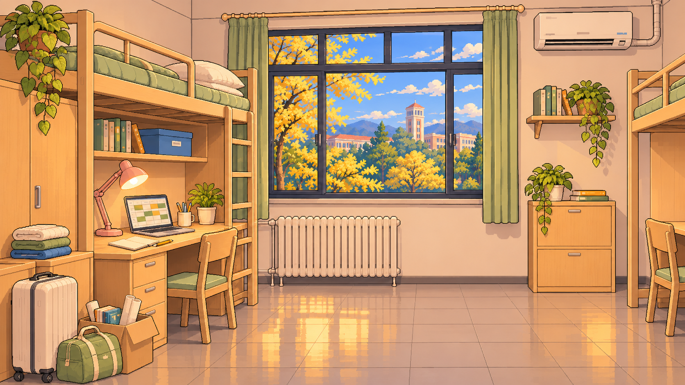
08 · 读懂预置课表
下载原图 PNG ↓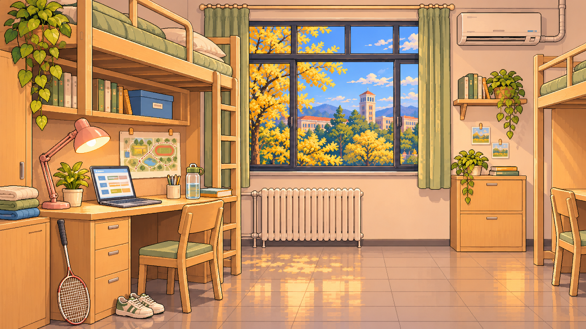
09 · 体育课正式选课
下载原图 PNG ↓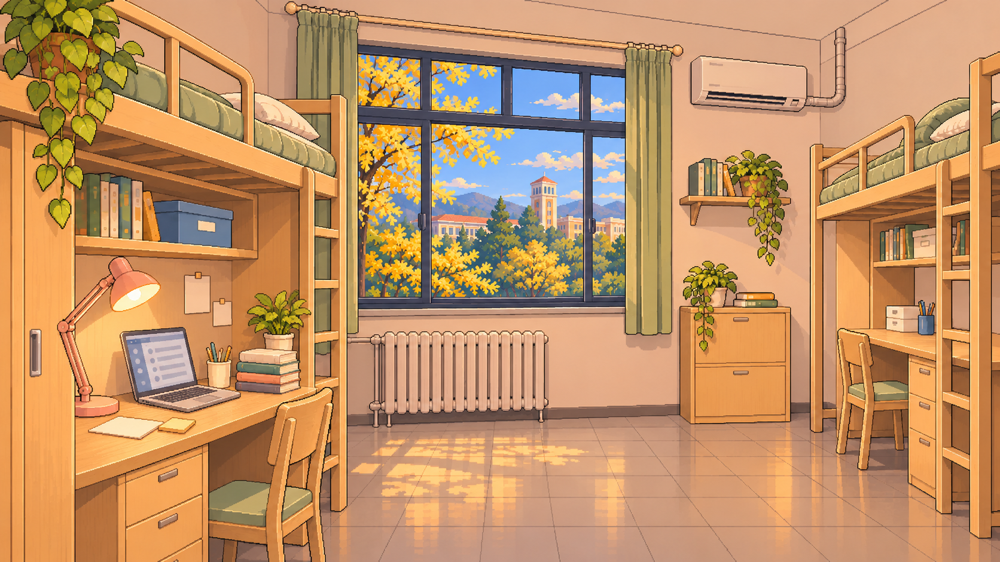
10 · 五史课程选择
下载原图 PNG ↓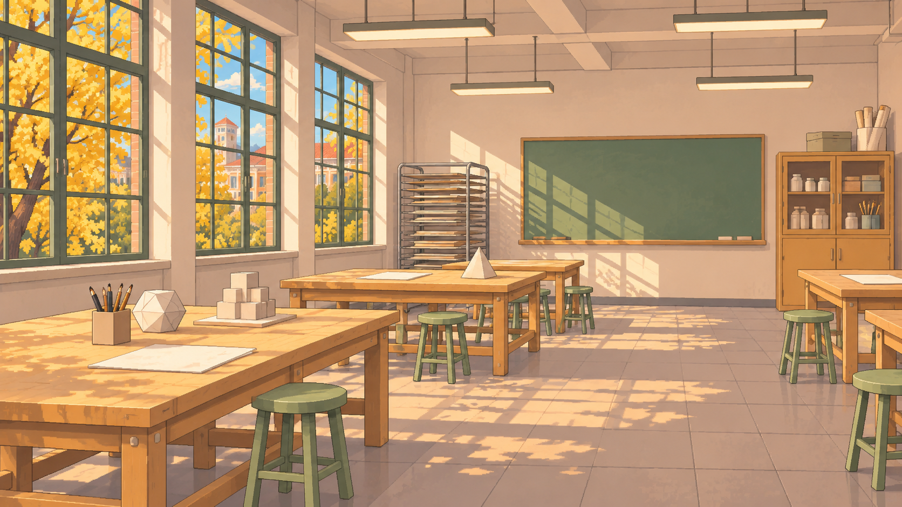
11 · 第一次设计课
下载原图 PNG ↓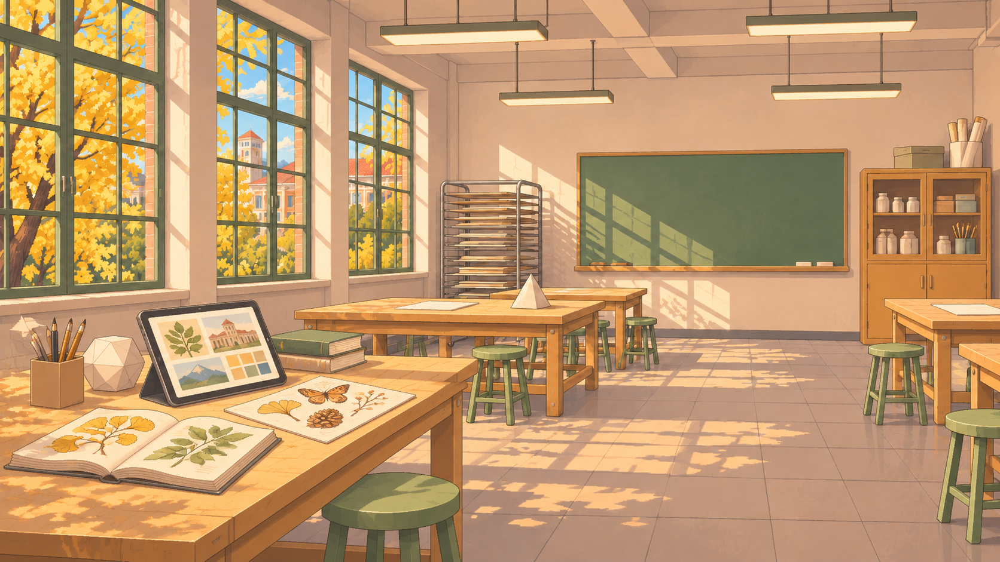
12 · 平板找图
下载原图 PNG ↓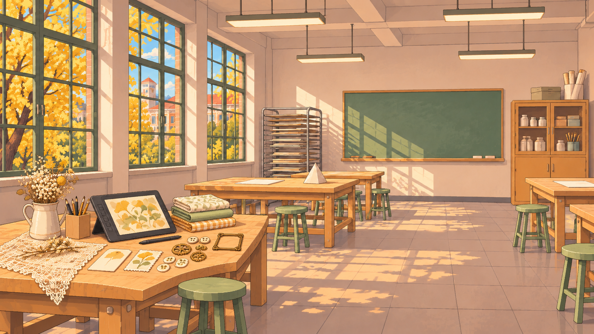
13 · 综合材料拼贴
下载原图 PNG ↓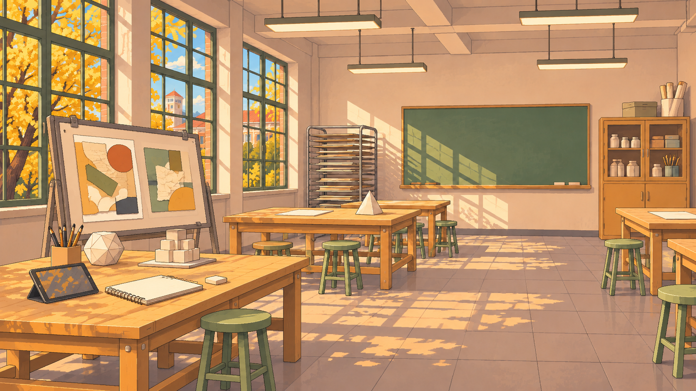
14 · 课堂看稿与反馈
下载原图 PNG ↓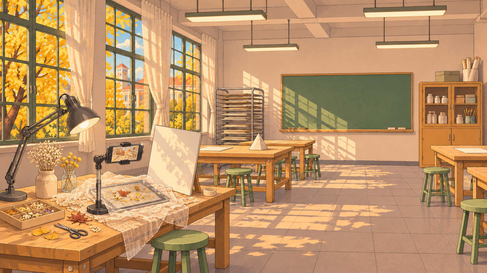
15 · 作品拍摄与反光
下载原图 PNG ↓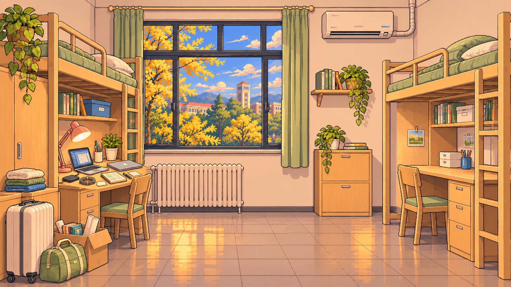
16 · 电脑与预算
下载原图 PNG ↓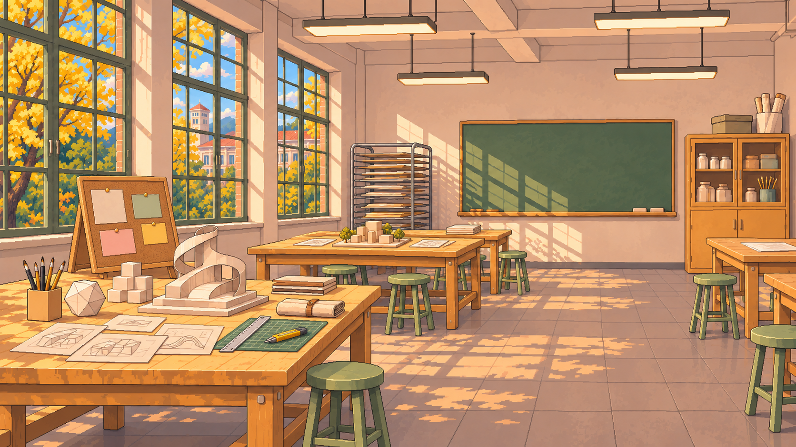
17 · 比赛与小组讨论
下载原图 PNG ↓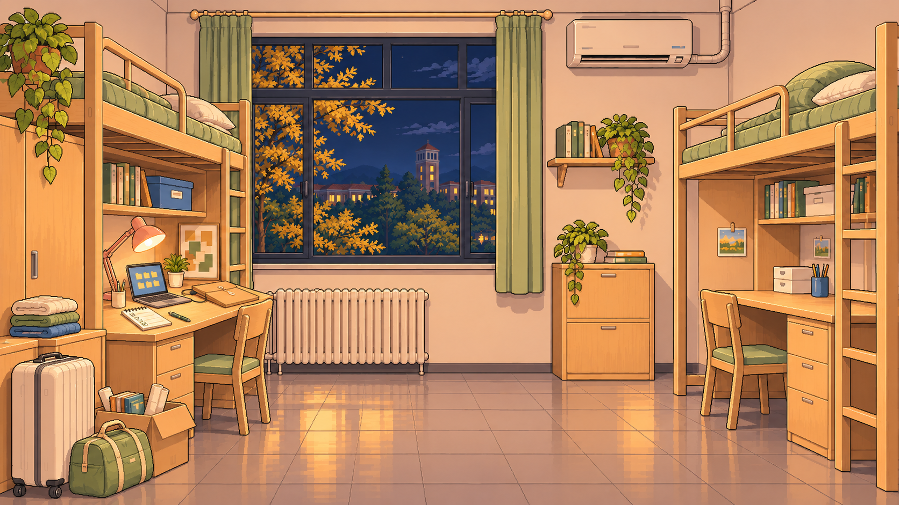
18 · 期末夜与文件整理
下载原图 PNG ↓19 · 学期尾声
下载原图 PNG ↓